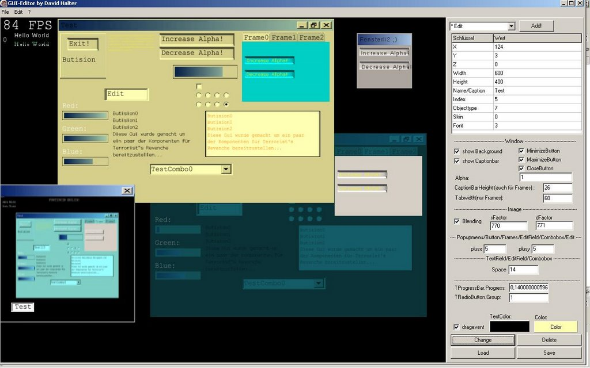
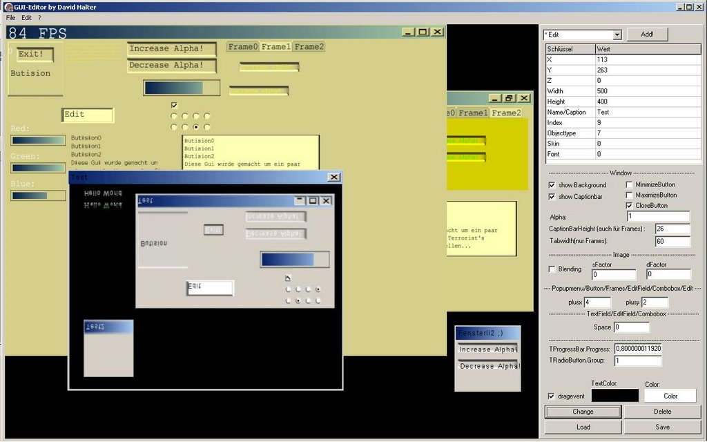

GUI Editor
written on Tuesday, January 2, 2007
Note
This is about a game I once wrote, which was part of my high school thesis. Unfortunately, it's written in German.
Ich habe seit der letzten GUI Version vorallem noch das Streamen (laden & speichern) gemacht und somit kann ich nun auch alle Komponenten speichern und laden.
Nachdem ich nun an der GUI eigentlich nur noch Bugfixes und ein paar kleine Änderungen zu machen hatte, startete ich dann mit dem programmieren des GUI-Editors, welcher mittlerweile schon sehr weit fortgeschritten ist. Daran müssen eigentlich nur noch ein paar kleine Änderungen gemacht werden, wie z.B. das ändern von Frames, Popupmenus und Comboboxes.
Durch Schulstress hatte ich allerdings auch nicht wirklich viel zeit um an meinem Projekt weiterzuarbeiten, dies sollte sich aber nun wieder bessern.
Überzeugt euch nun aber selbst:
 Und noch der Changelog der letzten Zeit der GUI:
- 09.12.06: Nun habe ich mich ein bisschen in GIMP eingearbeitet (welches übrigens ein sehr gutes Zeichenprogramm ist) um neue GUI - Texturen machen zu können. Ausserdem habe ich das Rendern der Buttons abgeändert.
- 14.12.06: Z-Abfragen funktionieren nun viel besser, ausserdem habe ich angefangen eine Speichermethode zu implementieren...
- 25.12.06: Streaming fertiggestellt (save & load) aber Bugs müssen noch ausgemerzt werden.
- 26.12.06: Beinahe alle Pointer abgeschafft, weil diese das ganze nur kompliziert machten und Bug-anfällig.
- 29.12.06: Streaming läuft nun perfekt, alle Bugs behoben. Comboboxes und PopUpMenus hatten einen Bug, wo die Zählvariabeln i und j vertauscht wurden (in onMousedown und onMouseup). Fixed. Durch Streaming wurde nun Version 1.1 erreicht. Das nächste Ziel wird der Editor sein. PopUpMenus werden nun beim klicken auf irgendetwas geschlossen. Das aktive Fenster wird nun im Z Wert höher gestellt wie normal.
- 31.12.06: Z wurde vielfach falsch gesetzt. Fixed.
- 01.01.07: Space ist nun der bezeichner für den Abstand zwischen den Combobox-Zeilen, nicht mehr Height.
- 02.01.07: Der Editor steht nun, man muss nur noch ein paar sachen verbessern. Edits und EditFields gaben eine Exception von sich, wenn man an den falschen Ort klickte. Update auf Version 1.2.